|
DkRPG
|
|
DkRPG
|
DkRPG is a personal project made during a hands-on learning exercise for Unreal Engine 5 and its Gameplay Ability System. The goal was to build a small but coherent Action RPG from the ground up, making real design and engineering decisions along the way, confronting the exact challenges that large projects do.
Code accounts for roughly 30 % of the total work in this project. The remaining effort was poured into the Unreal Engine editor, doing things such as:
These non-code work is inherently embedded in the project's binary assets. The C++ source files are shared here as a transparent record of my coding practice, trying my best to follow the conventions of the Unreal Engine codebase itself, including naming conventions, comment style, system design, logic flow, etc.
A short walkthrough video.
Available builds, each of which links to a downloadable .zip file, can be accessed via my itch.io page. Below is a summary of the releases:
| Version | Description |
|---|---|
| 1.0 | Initial release |
Extracting the folder and you will find for yourself the following directory structure:
Play the game simply by running DkRPG.exe.
Unreal Engine (UE) is a 3D computer graphics game engine created by Epic Games. It was first developed for the 1998 first-person shooter game Unreal. Although it began as a tool for PC first-person shooters, it has since been used across many different game genres and has expanded into other fields, especially film and television production. Written in C++, Unreal Engine is highly portable and supports a wide range of platforms, including desktop computers, mobile devices, consoles, and virtual reality systems.
Unreal Engine 1 was developed in 1995 by Epic Games founder Tim Sweeney for the game Unreal. It supported both software rendering and hardware rendering through early 3D accelerators such as the 3DFX Voodoo Graphics using the Glide API. The engine ran on Windows, Linux, Mac, and Unix systems. Epic later began licensing it to other game studios.
Unreal Engine 2 marked the shift from software rendering to full hardware rendering. It also added support for consoles including the PlayStation 2, Xbox, and GameCube. The first game built with UE2 was released in 2002, and the engine received updates until 2005.
Unreal Engine 3 introduced support for multithreading, allowing better performance on modern hardware. It used DirectX 9 as its primary graphics API, which helped simplify rendering. The first games using UE3 were released in late 2006.
Unreal Engine 4 introduced physically based materials and the Blueprints visual scripting system, making development more accessible. The first UE4 game was released in April 2014. This version was also the first to be free to download, with Epic Games earning revenue through royalties on game sales.
Unreal Engine 5 introduced major technologies such as Nanite, which enables extremely detailed geometry with automatic level of detail, and Lumen, a system for dynamic global illumination and reflections using ray tracing techniques. It was announced in May 2020 and officially released in April 2022.
Today, Unreal Engine powers many high-profile AAA titles across diverse genres, including:
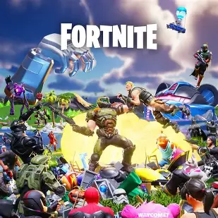
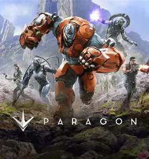
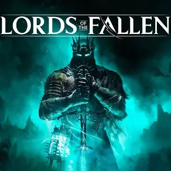
Beyond commercial titles, Epic does release prominent, complete sample projects as open-source resources freely available on the Unreal Engine Marketplace. These projects can be explored thoroughly and serve as invaluable references, significantly easing the learning journey for newcomers. Notable examples include:
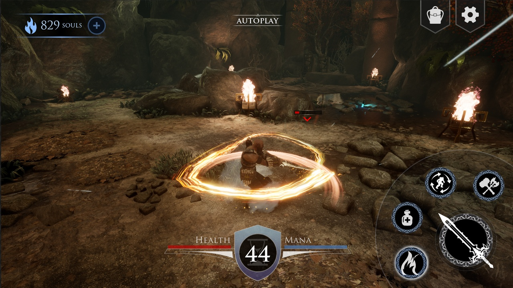

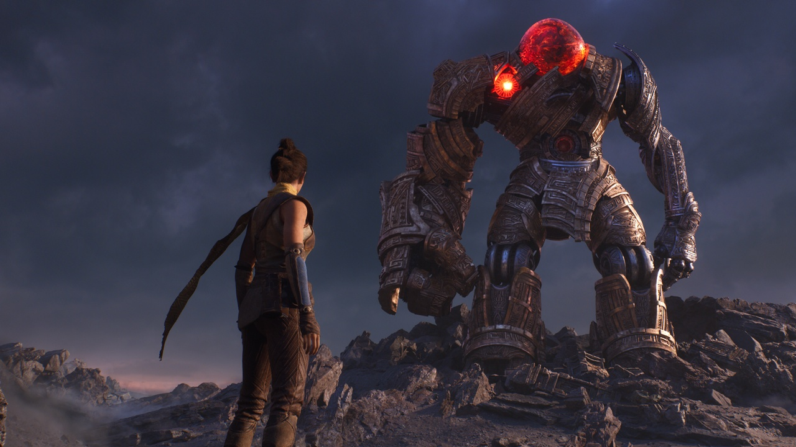
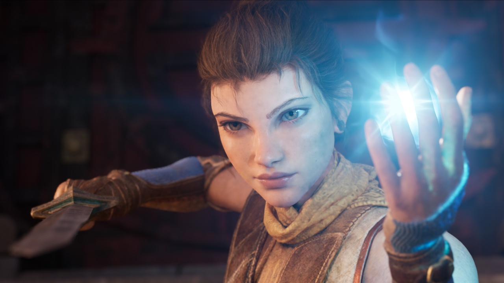
UE offers an insanely wide range of features, and it would be impossible to discuss all of them in this document, nor would it be in any existing documentation for that matter. Instead, we will briefly cover the features that are directly relevant to the development of the DkRPG project.
Note that this is not an exhaustive list of features used in the project, but rather a selection of the most important ones that are worth highlighting. Hyperlinks to the official documentation are provided for each feature in compensation for the lack of illustrations and in-depth explanations.
The DkRPG project is inevitably built on top of the standard Unreal Engine Gameplay Framework. Therefore, it is worth briefly discussing the key components:
Blueprints is a visual scripting system that allows developers to create gameplay elements without writing code. It uses a node-based interface where developers can connect different nodes to define the flow of logic.
Blueprints are designed to be user-friendly and accessible, making it easier for designers and artists to contribute to the development process without needing programming expertise. In fact, many game designers and artists of large game projects are non-coders.
Blueprints are essentially a visual layer built on top of C++, thus, any logic that can be implemented in Blueprints can also be implemented in C++. Below shows a simple implementation of sinusoidal movement upon an Actor named Item:
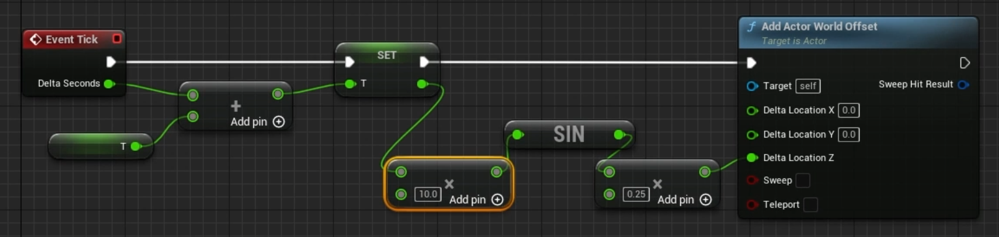
which is equivalent to:
We can always replicate Blueprint logic in C++, but not vice versa. Low-level implementations such as memory management, custom data structures, multithreading beyond async nodes can only be done in C++. However, there exist several features that are typically carried out in Blueprints and not in C++, Inverse Kinematics solver being a prime example.
Generally speaking, Blueprints are ideal for high-level game logic, while C++ is better suited for low-level systems and performance-critical code. Large projects use a combination of both, leveraging the strengths of each to create a more efficient and flexible development process.
Imagine implementing a simple interation: pressing a button to open a door. A very, if not the most, straightforward way is to have the button directly call the door’s Open() function. This works fine at first. But as our game grows, we might also want that same button press to trigger a sound, spawn particle effects, or inform AI systems that a new area is accessible. As a result, our button class starts referencing all these different systems (audio, visuals, AI) and quickly becomes cluttered and tightly coupled. This makes it harder to reuse the button elsewhere, because it is no longer a simple, independent component. Any change forces we to modify multiple connections.
Event-driven programming solve this problem by flipping the responsibility. Instead of the button controlling everything, it simply announces: “The button was pressed.” It now no longer cares who reacts. Other systems (the door, sound manager, or AI controller) can choose to listen and respond in their own way. Different game engines have different implementations adhering to this paradigm, and UE offers us Delegates.
Let us walk through a minimal example. Initially, we declare a delegate type and instance it:
Then, we can bind any function or lambda to this delegate:
Finally, when the button is pressed, we simply execute the delegate:
Notice how the button does not concern itself with who is listening or what they will do.
In C++, the simplest relative term of a delegate is a function pointer, which allows us to store the address of a function and call it later. In Blueprints, the equivalent concept is an Event Dispatcher, which serves the same purpose of allowing one Blueprint to broadcast an event that other Blueprints can listen to and react accordingly. UE itself makes heavy use of delegate‑like systems, as they they are the glue that lets systems talk without being hard‑wired together.
UE offers us not only one type of delegate, but an entire family of them:
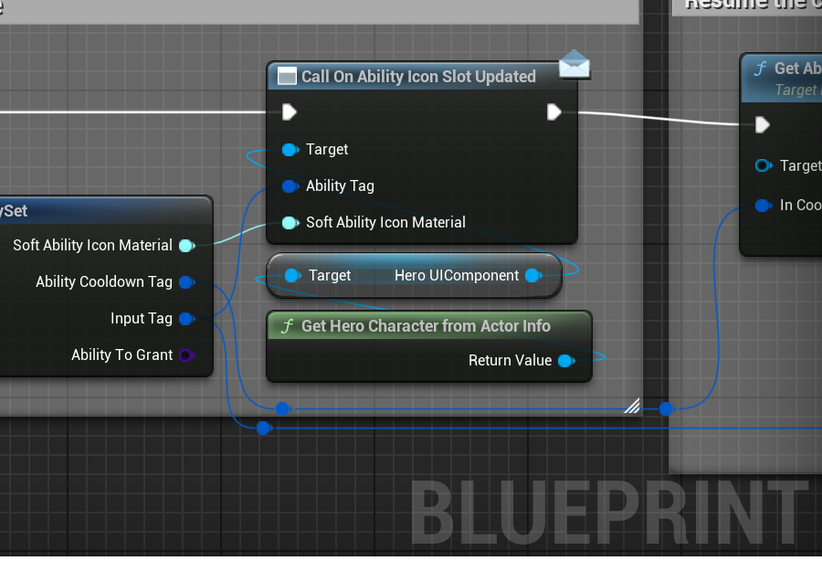
Animation in UE is built around a layered system of assets and tools that work together to bring characters and creatures to life. The three most fundamental pieces of this system are Animation Sequences, Animation Blueprints, and Animation Montages.
An Animation Sequence is the atomic unit of animation in UE. It is a single clip that records how a Skeletal Mesh should move over time by storing a series of keyframed bone transforms (i.e., position, rotation, and scale) sampled at a fixed rate. Because these keyframes are expressed relative to a particular bone hierarchy, every Animation Sequence is bound to a specific Skeleton asset. Two Skeletal Meshes that share the same Skeleton can therefore share all of their Animation Sequences, which is a common pattern when a game has multiple character skins built on the same rig.
Sequences can be played back at variable rates and can be set to loop. They also serve as the source data consumed by higher-level tools such as Animation Blueprints and Montages.
An Animation Blueprint is a specialized Blueprint class that governs the pose of a Skeletal Mesh at runtime. It runs every frame and outputs the final bone transforms for the mesh to display. An Animation Blueprint is assigned to a specific Skeleton and contains two main graphs:
Within the Anim Graph, a State Machine is the tool used to model locomotion and other complex, condition-driven animation logic. A State Machine is consist of:
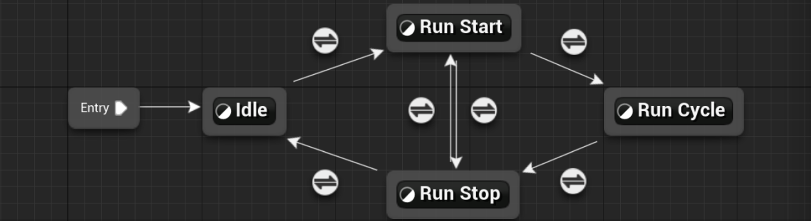
A State Machine with four states
State Machines can be nested and combined with blend nodes, Inverse Kinematics solvers, additive layers, and many other building blocks that make up the Anim Graph's node library.
An Animation Montage is an asset that wraps one or more Animation Sequences and adds a layer of runtime control on top of them. Where a State Machine handles continuous, looping locomotion, a Montage is the standard mechanism for one-shot, triggered actions such as attacks, dodges, item-use animations, or hit reactions.
A Montage divides its timeline into named Sections, enabling a GA or Blueprint to jump to specific parts of the clip or loop just a subsection. It also introduces the concept of Slots, which determine how the Montage blends on top of the base pose produced by the Animation Blueprint. For instance, an UpperBody slot can blend an attack animation onto the upper skeleton while the legs continue to be driven by the locomotion State Machine.
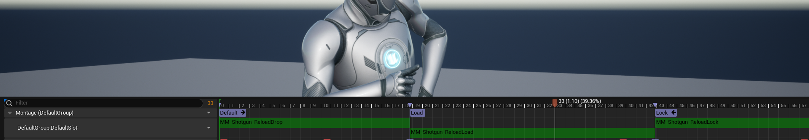
An Animation Montage with three sections placed within one default slot
A key feature of Montages is the support for Anim Notifies, which are events that fire at precise points in the animation timeline. There are two flavors:
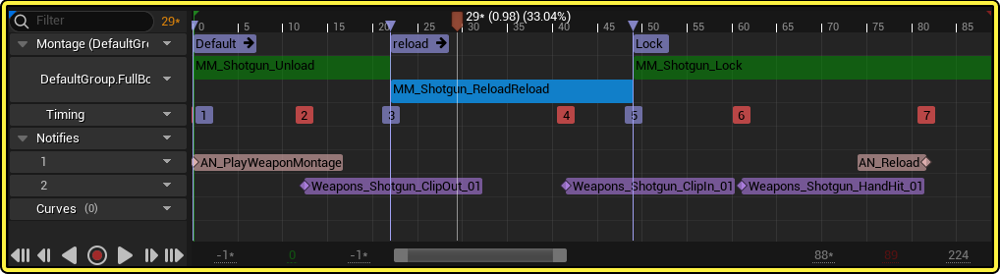
Several Anim Notifies placed within a Montage
We can create AI for characters using several approaches. Via Blueprint, we can define specific actions for a character such as playing animations, moving to a location, or reacting to events like being hit. However, if we want your AI characters to think and make decisions on their own, Behavior Trees provide a more advanced and flexible solution. It organizes logic in a tree structure that starts from a Root node and branches into different behaviors. The tree runs continuously, allowing AI characters to react dynamically to the game world.
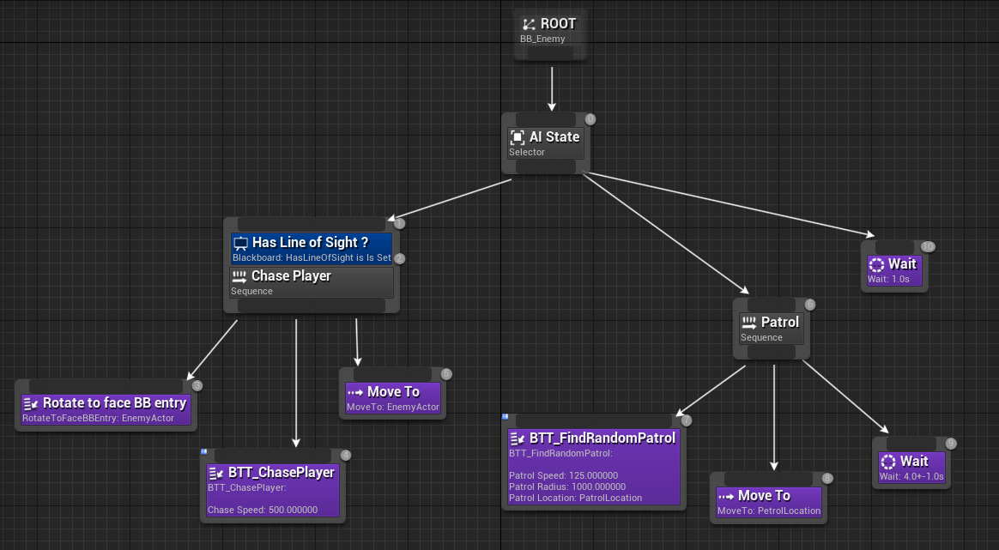
The Root node is the starting point of the tree. It does not contain logic itself but simply connects to the rest of the structure, usually leading into a Composite node that controls the flow.
Composite Nodes determine how the tree executes its children:
Task Nodes are where actual actions happen. These are the leaf nodes of the tree and perform operations like moving, attacking, or waiting.
Decorators Nodes act as conditions that control whether a node can run. They are attached to tasks or composites and check things like visibility of an enemy or the AI’s health. If conditions are not met, they can block or interrupt execution.
Services Nodes run in the background and update information regularly. They are often used to monitor the environment, such as tracking the player’s position, and update shared data while the tree is running.
The Blackboard is the memory system of the Behavior Tree. It stores variables like targets, locations, or states, and all parts of the tree can read or write to it. This allows different nodes to share information and coordinate behavior.
All of the mentioned components work together to create complex and dynamic AI behavior. A typical flow involves:
According to the Unreal Engine documentation:
The Gameplay Ability System is a framework for building abilities and interactions that Actors can own and trigger. This system is designed mainly for RPGs, action-adventure games, MOBAs, and other types of games where characters have abilities that need to coordinate mechanics, visual effects, animations, sounds, and data-driven elements, although it can be adapted to a wide variety of projects. The Gameplay Ability System also supports replication for multiplayer games, and can save developers a lot of time scaling up their designs to support multiplayer.
With this system, you can create abilities as simple as a single attack, or as complex as a spell that triggers many status effects depending on data from the user and the targets. This page provides an overview of the Ability System and how its components work together.
The official description sounds good but also vague at the same time. This is because the Gameplay Ability System itself is so vast and capable that it is impossible to condense it down to a single paragraph. Let us discuss the high-level concept of the system using a real life scenario.
Suppose we a goal to create a video game. There are many different game genres, but for the sake of this example, let us choose to create an Role-Playing Game (RPG). An RPG is typically a fairly large game project involving a number of elements, one of which is Attributes, commonly referred to as stats. Examples of attributes include a form of Health or Life for the character that the player will control throughout the game. Life is typically defined as the amount of damage the character can take before being killed or eliminated. Damage itself is often treated as an attribute and can be affected by a number of factors, including the character's other attributes equipment such as armor and weapons, and the effects of magical spells or anything else that we see fit.
Usually, attribute values depend on other attributes as one attribute changes. Those derived from it often change according to some mathematical formula determined by game designers. For example, the character may have a Critical Hit Chance attribute that adds the chance to cause bonus damage when the character attacks, and this crit chance may be derived from the character's Dexterity attribute and the weapon's Critical Bonus attribute. Generally speaking, RPGs often have a large number of attributes that affect various aspects of gameplay. We can store these attributes in a structured architecture, an Attribute Set, and achieve the aforementioned relationships between them.
Attributes are not the only feature of a game. We mentioned damage and the act of causing and taking damage. Damage is typically caused by abilities. An attack typically involves:
Most of the time, there is often some sort of visual or audio cue associated with any given gameplay mechanic. A sword hitting an enemy releases a splash of blood on contact.That's usually some kind of particle system. A magical fireball explodes on contact, which creates a loud boom sound. These visual and audio cues are every bit as important as the underlying mathematical calculations that affect the various attributes in the game. Gameplay Cues are how we implement these visual and audio cues in a way that is separate from the underlying game logic, allowing us to change the presentation of our game without having to change the core mechanics.
Defeating an enemy is usually accompanied by a reward of some sort. The reward, often issued in RPGs, comes in the form of experience Points or XP. A character can accumulate experience, and once this character has amassed a certain amount determined by a threshold for that particular level, that character may reach a point where it is now eligible for an upgrade of some sort. We often call this upgrade a level up where the character's level a numerical value designed to be a measure of cumulative progress in the game goes up. Just about most games involve some sort of Health or Life, and nearly all games make use of a form of progress, even if it is not called the player's level.
Games can get as complex as they are designed to be, and the more complex a game becomes, the more relationships the various game elements have with one another and the more difficult it can be to manage all of these relationships. It can help if there is a system that allows us to organize these relationships, these attributes, effects, abilities and gameplay cues. This is where the Gameplay Ability System (GAS) comes in.
One may wonder whether we can make a complex game such as an RPG similar to what has just been described without GAS. We certainly can. Countless games, even super complex RPGs have been created before the advent of GAS. But those games, at least the ones successful enough to be heard about, succeeded as a result of impeccable design management and code framework. GAS provides us with such a framework. Its system was designed to handle the complexities of the game Paragon.
Paragon was a Multiplayer Online Battle Arena (MOBA) game developed by Epic Games. It featured a large roster of characters, each with unique abilities and interactions. A MOBA is a competitive multiplayer game involving multiple character types, each of which generally has its own set of unique abilities and strengths. Characters in MOBAs often gain experience, level up and earn new abilities, all in the space of a single multiplayer match. MOBA is a game genre that combines just about every technical challenge a game development team can face, and all of the complexities discussed thus far are generally implemented in it. Thus, it is the type of game project that absolutely requires a solid framework that is modular, flexible and scalable. It must have a code base that can accommodate for attributes, effects, abilities and cues and do so in a way that is handled well in multiplayer and allows for each element in the system to interact with any of the others in an efficient and well coded manner to handle such a complex system.
Unfortunately, Paragon was eventually cancelled and Epic decided to focus its game development efforts primarily on Fortnite. However, Paragon was not a complete waste of time, talent and resources. It turned out that GAS was so well structured, so versatile and so expertly coded that it can be utilized in any number of situations. It allows a game to have a complex system of attributes, abilities, effects and cues in a fully replicated way (i.e. it works in a networked multiplayer environment with lag compensation providing a smooth gameplay experience even in the presence of lag). Currently, it is an integral part of Fortnite itself.
Guillaume David in his paper, Unreal Engine’s Gameplay Ability System, from programming framework to designer’s tool, has written that:
Then I read about UE4’s GAS and found out that any game could use it extensively. Basically anything that can happen in a game can be implemented using GAS, although maybe not everything should.
Stephen Ulibarri, a game developer and a well-known educator, has stated in his Gameplay Ability System - Top Down RPG course:
GAS is the most beautiful piece of software engineering that I've ever touched.
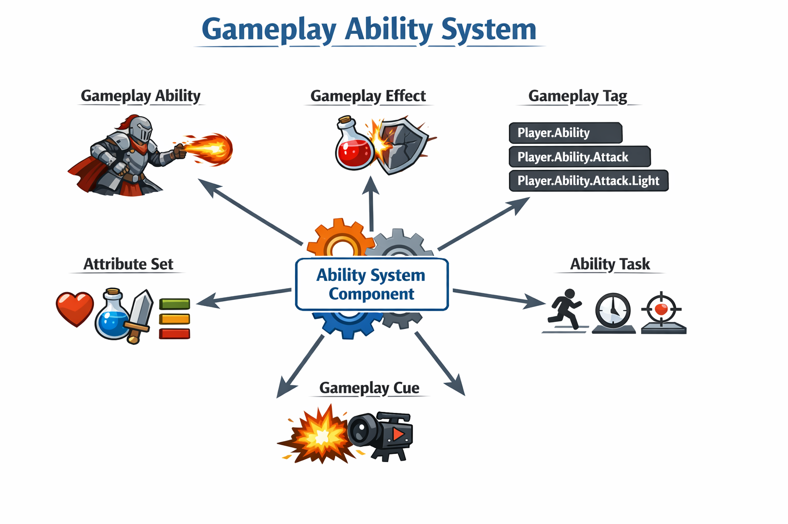
The Ability System Component (ASC) is the heart of GAS. Any Actor that intends to interact with the GAS either needs to own an ASC or be able to access one, such as a Player State or Player Controller. The latter case is useful for keeping persistent data that should not reset when the Pawn/Character is destroyed or replaced.
ASC, as its name implies, is a component that can be added to any Actor. Similar to other components (e.g., a Static Mesh Component or a Character Movement Component), it adheres the Component Pattern, a common design pattern in game development that allows for modular and reusable code, that favors composition over inheritance.
The official documentation already gives a brief but concise overview of the ASC, as well as how to set it up and use it.
Gameplay Effects (GE) are the means through which GAs change attributes. The GAS framework provides us with three types of GEs:
The Gameplay Effect class is meant to be a data-only class that defines a single gameplay effect and no additional logic should be added to it. The actual action of changing attributes is achieved through the use of Modifiers and Executions. Modifiers are used for simple attribute changes, while Executions are used for more complex calculations that may involve multiple attributes and conditional logic.
Duration and Infinite GEs also support a rich Stacking system. Without stacking, applying the same GE multiple times simply runs each instance independently, each with its own duration, causing attributes to change as many times and as fast as the number of concurrent instances. There are two stacking models: Aggregate by Source and Aggregate by Target, which are about how the stack count is tracked and how it interacts with the maximum stack limit. On top of the stacking type, GAS exposes additional policies that govern what happens when a new stack is successfully applied or when the effect expires: Stack Duration Refresh Policy, Stack Period Reset Policy, and Stack Expiration Policy.
These levels of control would require significant effort to build from scratch. Fortunately, GAS provides them out of the box, allowing us to implement complex attribute interactions without having to worry about the underlying mechanics of how they work.
Gameplay Abilities (GA) are the means through which characters perform actions. They can be activated by player input, AI decisions, or gameplay events. Basically any action that a character can perform can be implemented as a GA, although not every action necessarily needs to be so.
Examples of actions that can be implemented as GAs include:
Things that should not be GAs are:
The implementation of GAs itself does not put up a constraint on what can and cannot be a GA. Therefore, what should and what should not be GAs is ultimately up to us, the game developers.
Zhi Kang Shao, a software engineer and developer at Epic Games, has summed up the concept of GAs and GEs during his Unreal Fest Bali 2025 talk:
Gameplay Effects are about what to do, whereas Gameplay Abilities are about when to do it.
GAs are what game designers want to make. They can be granted to (or removed from) the ASC, and can block (or be blocked by) other GAs. They can apply GEs to the owner or to other targets.
GAs only execute in one frame. This does not allow for much flexibility on its own. To do actions that happen over time or require responding to delegates fired at some point later in time we use latent actions called Ability Tasks (AT). These allow us to execute code that is asynchronous, meaning that once we start the task it may perform its job and finish immediately or its job may span across a period of time and may do different things depending on what is going on in the game for that specific ability. We can think of ability tasks as the workers that perform the work for the GA itself.
In Blueprint, ATs appear as latent nodes that can resume execution asynchronously at a later point in time under specific conditions.
Attributes are floating-point values that describe properties of an Actor, such as health or movement speed. Each attribute has both a base value and a current value, allowing temporary modifications like buffs or debuffs to be applied without permanently changing the original value. This concept seems straightforward at first glance, but we may encounter scenarios that make us ponder. For example, should we consider:
Alternatively, we can implement these simply as properties of the Actors. Similar to GAs, what should and what should not be attributes is ultimately up to us, the game developers.
Attributes are organized into Attribute Sets (AS). We can use a single, large AS shared across all Actors in our game, accessing only the attributes we need and ignoring the rest. Alternatively, we can organize attributes into multiple Attribute Sets based on their purpose and assign them to Actors as needed. For instance, we might have separate sets for health, mana, and other categories. In a MOBA game, heroes may require mana while minions do not, so only heroes would be given the mana Attribute Set.
As the official documentation states:
Gameplay Tags are conceptual, hierarchical labels with user-defined names. These tags can have any number of hierarchical levels, separated by the "." character.
A Gameplay Tag with three levels would take a form of "Animal.Mammal.Canine", with "Animal" being the broadest identifier in the hierarchy, and "Canine" being the most specific. And this also implies the existence of "Animal.Mammal" and "Animal" tags.
While not strictly speaking part of the GAS, Gameplay Tags are tightly integrated in it.
It is often the case that we find ourself replacing things that used to be handled with booleans or enums with Gameplay Tags and doing boolean logic on whether or not objects have certain Gameplay Tags. Similarly, GAS uses Gameplay Tags as conditions: GAs and GEs can be blocked based on their tags, or have tag requirements. The hierarchical capability of Gameplay Tags can be very useful for subcategories, so that a damage effect with the tag "Damage.Magic.Fire" would be recognized as an effect with "Damage.Magic"..
Gameplay Cues (GC) are the means through which we implement visual and audio feedback for gameplay events. They allow us to separate game logic from presentation, making it easier to change the visual and audio effects without affecting the underlying mechanics, so that the gameplay outcome remains consistent regardless of how it is presented.
In term of visual effects, we can use particle systems, decals, or even animations to provide feedback to the player. For audio effects, we can use sound cues or music to enhance the player's experience. GCs can also be used for UI feedback, such as showing a damage number when an attack hits or displaying a buff icon when a character receives a buff.
Usually, GCs are triggered by sending a corresponding Gameplay Tag with the mandatory parent name of "GameplayCue".
Although GAS provides us with a solid framework to implement complex game mechanics, it does not dictate how we should design our game, as the framework is generic enough to allow multiple approaches. Once we have decided to use GAS for our project, we will likely encounter a number of design dilemmas that we need to resolve. The answers to all of these would be more implementation guidelines rather than strict rules.
GAs act as an additional layer built on top of standard Blueprints, so in theory, anything that can be implemented with Blueprints could also be implemented as an Ability. The real question is not whether it can be done, but whether it should be done that way.
Obvious candidates include character-specific powers, basic attacks, item usage, environmental interactions, and power-ups. Beyond that, the boundaries become less clear, as mentioned above, as for both GAs and GEs. For example, should basic movement be implemented as an Ability? Similarly, could selecting a unit with a click be considered an Ability? What about AI decision-making logic?
Another consideration is how the UI reacts to changes, such as updating a health bar when an attribute changes. Should these updates be triggered through Gameplay Events, or handled separately?
Consider a common scenario where a player character can switch weapons. Actions like attacking, reloading, or parrying could all be modeled as GAs. The question is where these abilities should reside.
Should each weapon actor have its own ASC, or should weapons simply grant abilities to the character’s existing component? Since the ASC also manages ASs, this raises further questions. For example, should weapon-specific properties like durability or ammo be treated as attributes within the system, attached to the character, or just stored as regular variables on the weapon actor?
This issue extends beyond weapons. Should every non-player character (NPC) and objects have its own ASC? If many actors require such components, performance considerations may become important.
At its core, this question is about distinguishing between general game mechanics and special-case behavior.
Take a simple example: characters have a Health attribute, and a damage GE reduces that value. Should the effect directly modify the attribute? If so, how shall we handle damage upon an object that does not have health? Alternatively, should the AS itself handle how damage is applied, allowing different actors to process damage in different ways?
When a GA spawns an Actor (like a projectile), should that Actor deliver the GE itself, or should it pass the target data back to the original Ability to handle?
Then consider armor or other forms of damage mitigation. If all actors use armor, could it be implemented as an attribute and included in damage calculations? Shall we take a step further and armor could instead be represented as a GA that triggers upon receiving a damage GE and modifies the Gameplay Effect Spec accordingly?
A similar question arises with status effects. One approach is to define a Gameplay Tag, such as "Stunned", and configure abilities to be blocked when that tag is present. This treats stun as a core mechanic that all abilities are aware of. But should every possible status effect be handled this way? And should every system in the game be responsible for checking every single relevant tag?
Which building blocks should programmers provide ready-made, and which should be left for (technical) game designers to design? For example, should we create a generic "Damage" GA that takes parameters for damage type, amount, and other factors, or should we create specific GAs for each type of damage (e.g., "Fire Damage", "Ice Damage")? The former approach provides more flexibility and reusability but may require more setup for designers, whereas the latter is more straightforward for designers but can lead to a proliferation of abilities and less flexibility.
Debugging is an indispensable part of game development. Often during the process of implementing game mechanics with GAS, we may find ourselves asking:
- "What are my attributes and their current values?"
- "What gameplay tags do I have?"
- "What gameplay effects do I currently have?"
- "What abilities do I have granted, which ones are running, and which ones are blocked from activating?"
The showdebug abilitysystem command provides us with a powerful tool to visualize all of this information in-game. We can see every gameplay tags owned by the ASC belonging to the currently selected Actor, which updates in real time as tags are added and removed. There are also different pages displaying more different information.
The first page shows us a list of all attributes with their current values:
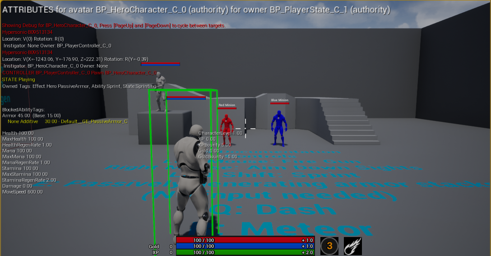
GAS `showdebug abilitysystem` Page 1
The second page shows us all the active GEs, along with their given tags, duration and Modifiers:
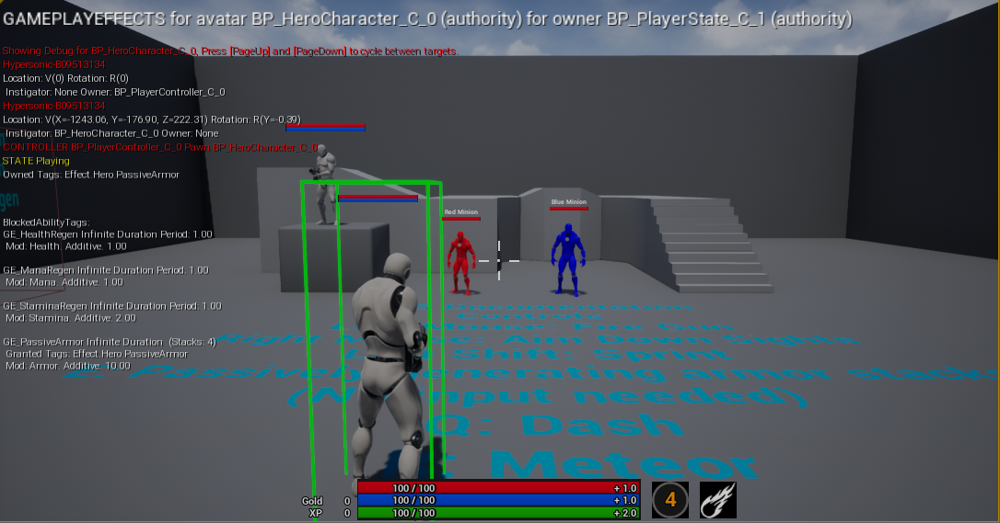
GAS `showdebug abilitysystem` Page 2
The third page shows all of the GAs that have been granted, whether they are currently running, whether they are blocked from activating, and the status of currently running Ability Tasks.
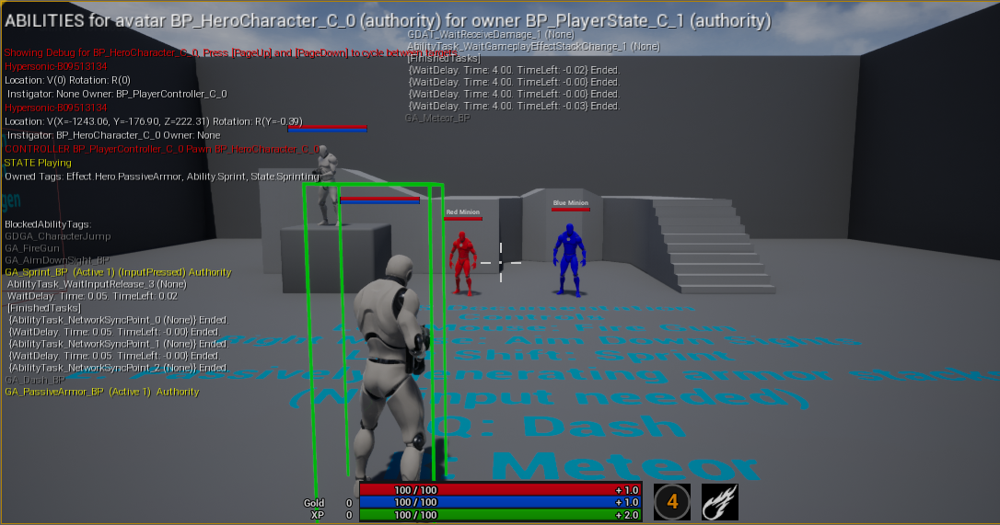
GAS `showdebug abilitysystem` Page 3
Furthermore, GAS adds functionality to the Gameplay Debugger. After navigating to the Abilities category by pressing 3 on the numpad, we are demonstrated with similar information as the showdebug abilitysystem command, toghether with additional information such as the source of the active GEs and the level of the GAs.
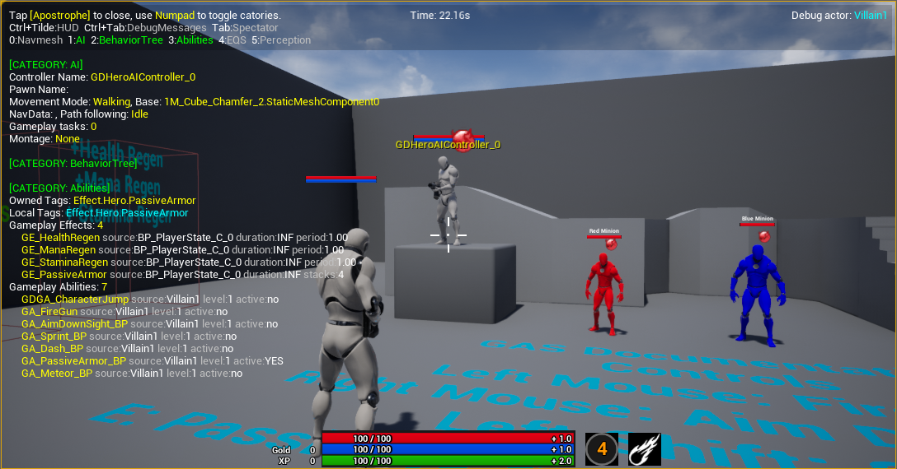
GAS Gameplay Debugger
If we want to achieve such a level of debugging and visualization without GAS, we would have to implement it ourselves, which certainly takes a massive amount of effort. With GAS, we get these tools out of the box, allowing us to focus more on designing and implementing our game mechanics rather than building debugging tools.
Up to now, we have discussed GAS primarily in the context of single-player games. However, a key feature of GAS that is just as prominent, if not more so, as other features, is its built-in support for replication and networking, making it an excellent choice for multiplayer games. Replication means that the state of the game is synchronized across all clients and the server, ensuring that all players see the same game state and experience consistent gameplay.
The framework handles the complexities of synchronizing abilities, effects, and attributes across the network via a combination of client-side prediction, server authority, and lag compensation. Prediction means allowing the client to activate a GA and apply GEs immediately, without waiting for the server’s approval. Meanwhile, the server processes the same GA after a delay caused by network latency and then verifies the client’s actions. If the client’s predictions match the server’s results, everything continues smoothly. If not, the client corrects any mistakes by rolling back the incorrect changes and synchronizing with the server’s authoritative state.
The replication system is still in the development process and not yet complete. Not everything is fully replicated out of the box, as can be read from GameplayPrediction.h:
In the very well-known GASDocumentation, a community-written, in-depth guide to GAS, the author states that:
Regarding predicting damage, I personally do not recommend it despite it being one of the first things that most people try when starting with GAS. I especially do not recommend trying to predict death. While you can predict damage, doing so is tricky. If you mispredict applying damage, the player will see the enemy's health jump back up. This can be especially awkward and frustrating if you try to predict death. Say you mispredict a Character's death and it starts ragdolling only to stop ragdolling and continue shooting at you when the server corrects it.
That said, it is important to note that while GAS provides the tools and framework for replication, it does not automatically make everything work perfectly in a multiplayer context. Developers still need to design their abilities and effects with replication in mind, ensuring that they are properly set up to work with the networked environment.